Ibiúna, SP · 5.866 m² · a 90 minutos de São Paulo
Viver hoje. Investir amanhã. Construir o futuro.
Um lugar para desfrutar hoje, gerar renda e, no futuro, se tornar uma comunidade para morar.
O projeto · O lugar
Na zona rural de Ibiúna, a 90 minutos de São Paulo — solo fértil, neblina matinal e o silêncio de verdade. Um terreno pensado para viver, receber e produzir ao mesmo tempo.
A estrutura
O coração do projeto: cozinha, convívio e varanda com vista para o jardim.
Borda molhada e entrada suave, para relaxar como quem chega à praia.
Sauna seca com passagem direta para a água, integrada ao lazer.
Areia iluminada e cercada por vegetação, para jogar a qualquer hora.
Espaço seguro de brincar, próximo à piscina e à quadra.
Canteiros para cultivar temperos, folhas e legumes o ano todo.
Árvores frutíferas para colher, consumir e compartilhar.
Cerca de 35 m² cada, com quarto, banheiro e varanda própria.
Espaço confortável e seguro para os cães, integrado à natureza.
Ovos frescos e integração real com a produção orgânica.
Vagas amplas com piso permeável e drenagem natural.
Caminhos para andar, respirar e observar a mata com calma.
Vegetação em todo o perímetro, garantindo privacidade natural.
Modelo de uso
Hoje
Uma casa de campo compartilhada pelos sócios — para descansar, receber e reconectar com a natureza.
Amanhã
Hospedagem e eventos aproveitam a estrutura nas janelas livres, transformando o lugar em fonte de renda.
Futuro
Uma comunidade para morar, trabalhar e viver com mais propósito e qualidade de vida.
Linha do tempo · 20 anos
Aquisição do terreno, casa principal, chalés e infraestrutura. O projeto nasce e já pode ser desfrutado pelos sócios.
Hospedagem, eventos e day-use cobrem os custos e geram renda, reduzindo progressivamente o aporte líquido dos fundadores.
A estrutura amadurece e se transforma em uma comunidade para morar, viver e trabalhar com mais qualidade de vida.
Visão de futuro · Legado
Mais que um investimento,
uma escolha de vida.
Transformar este lugar numa comunidade intencional, alinhada à natureza — onde qualidade de vida, conexão real e bem-estar constroem um legado para as próximas gerações.
Todos os dias, com mais calma e presença.
Com as pessoas e com a natureza ao redor.
Corpo, mente e alma em equilíbrio.
Para a família e para o futuro.
Documento conceitual. Cifras reavaliadas com custos de mercado 2026 — estimativas sujeitas a validação, não constituem promessa de retorno.
Tese de investimento
Comprar um ativo real — de preferência uma chácara já construída, com potencial de valorização — e operá-lo comercialmente para que se autossustente. A renda amortiza parte do aporte ao longo de 20 anos, até que o lugar se torne moradia.
Investimento & retorno
Modelo societário
Constituição de uma Holding (Ltda.), dona do terreno e da operação.
Cotas proporcionais ao investimento de cada fundador.
Direitos e deveres definidos em acordo de sócios.
Estrutura que facilita entrada, saída e sucessão.
Gestão profissional e transparente ao longo do tempo.
Cenário recomendado
| E1 | Mês 0–3 | Aquisição do imóvel + custos de transação + constituição da holding |
| E2 | Mês 3–9 | Reforma seletiva + mobiliário / enxoval + energia solar |
| E3 | Mês 9–15 | Sauna + quadra de beach tênis + infra final + operação plena |
Motor de receita
Diárias via Airbnb e Booking, com foco em grupos nos fins de semana, feriados e alta temporada — aproveitando as casas e a estrutura de lazer.
Casamentos, retiros e encontros corporativos usando a estrutura completa e o cenário natural.
Uso da estrutura de lazer por visitantes durante o dia, sem pernoite, gerando receita adicional.
Evolução do custo líquido
Conforme a operação comercial avança, a renda amortiza progressivamente o aporte. Ao chegar na moradia (~ano 20), o custo líquido efetivo cai bastante.
Próximos passos
Reunir o grupo de fundadores (cenário-base: 4 a 5) e alinhar expectativas antes de qualquer aporte.
Verificar documentação, regularização das edificações, acesso, água e situação ambiental.
Formalizar a estrutura jurídica antes da compra, com cotas definidas.
Comprar a chácara e iniciar a adaptação — a operação pode começar em poucos meses.
Idealização · O terreno
Terreno candidato avaliado como referência: quatro vezes o programa do RAÍZES, na mesma terra vermelha de Ibiúna — a ~70 km de São Paulo. Metade do conceito já está de pé.
Vista a pino · leitura do sobrevoo
Frame do vídeo de drone com o contorno do lote. Sobre ele, a leitura de implantação: onde está o núcleo construído, para onde a terra cai e onde sobra área livre.
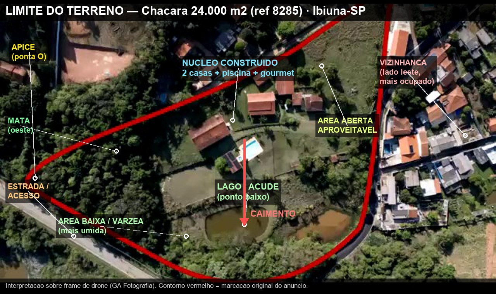
Programa × realidade
Cada zona do conceito confrontada com o que a chácara já entrega. Status: Atende (já existe), Adaptar (existe algo aproveitável), Construir (do zero).
Implantação · esboço
Sobreposição conceitual do programa na área aberta a Leste, aproveitando o que já existe. Fora de escala — serve para enxergar a lógica de ocupação antes do projeto executivo.
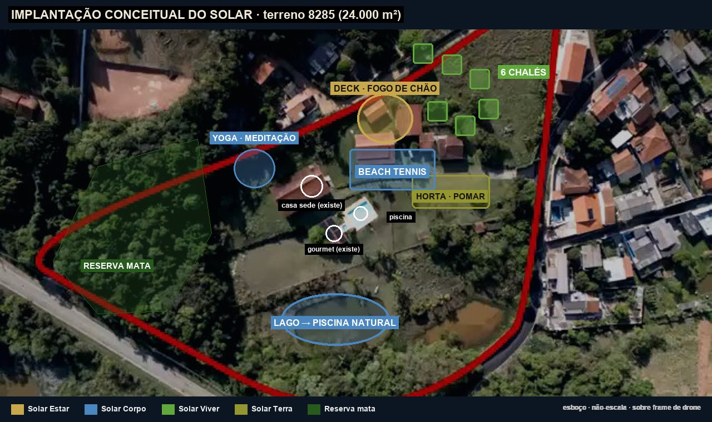
Leitura do terreno
O que as 55 fotos e o sobrevoo dizem sobre a terra — antes de qualquer projeto.
Núcleo construído num platô com vista; a terra desce suavemente até o açude, que ocupa o ponto baixo. Casas assentadas em pilotis — boa drenagem. Declive trabalhável, não escarpado.
Recurso hídrico natural raro num lote de lazer: base pronta para a "piscina natural" e para a irrigação da agrofloresta. Verificar outorga / APP.
Miolo gramado bem cuidado, palmeiras imperiais, jardins — e grandes faixas abertas a Leste, livres para novos chalés, quadra ou deck. Mata madura nas bordas.
Entrada por portão de madeira e estrada interna de concreto até as casas. Rua asfaltada e iluminada no limite Oeste, próxima à rodovia e a comércio.
Veredito
Terreno generoso —
sobra terra para o RAÍZES respirar.
Com 24.000 m² por R$ 56/m², a chácara cabe o programa inteiro (5.850 m²) e ainda deixa margem para mais reserva de mata, mais chalés e áreas de silêncio. Metade do conceito já está de pé — casa sede, gourmet, pomar, mata e água. O trabalho vira curadoria e adaptação, não construção do zero. Antes de avançar, cobrir os pontos abaixo.
Registro fotográfico · 55 fotos
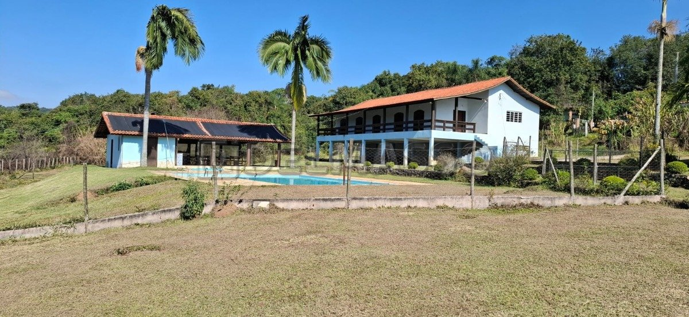
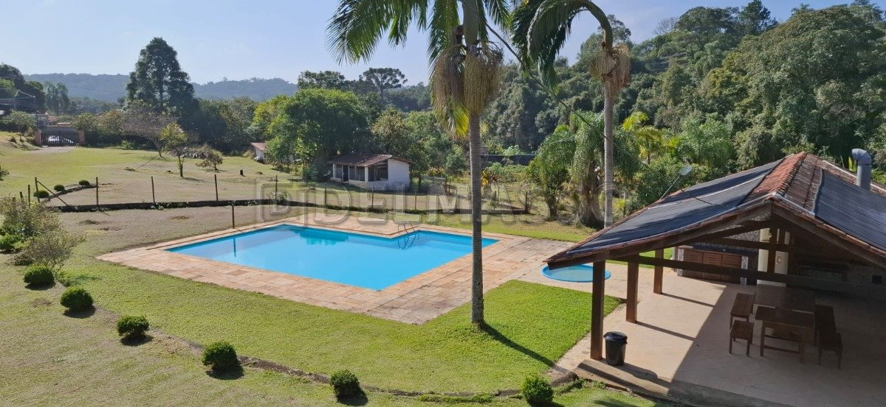
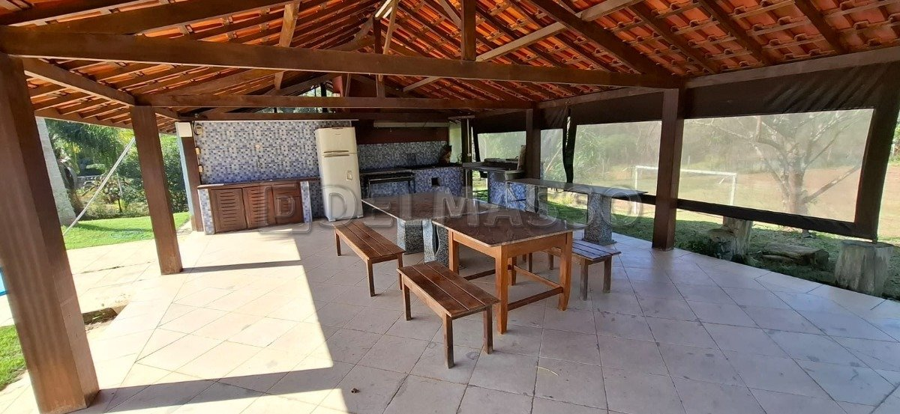
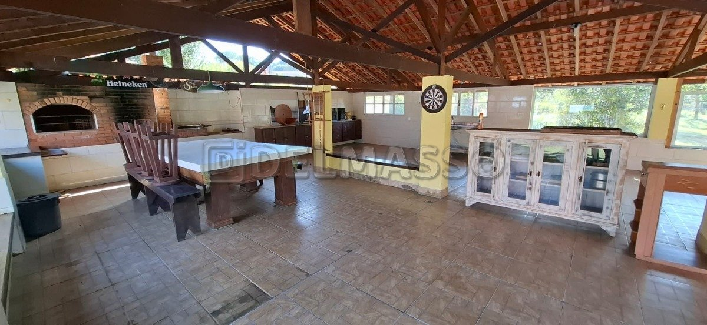
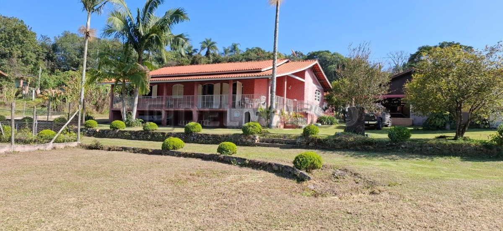
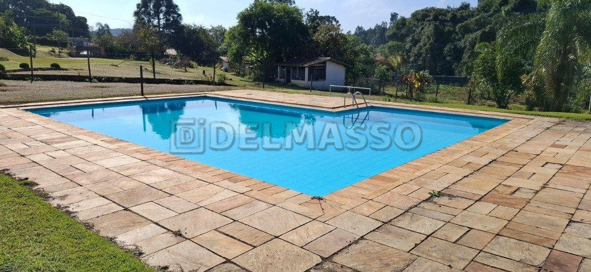
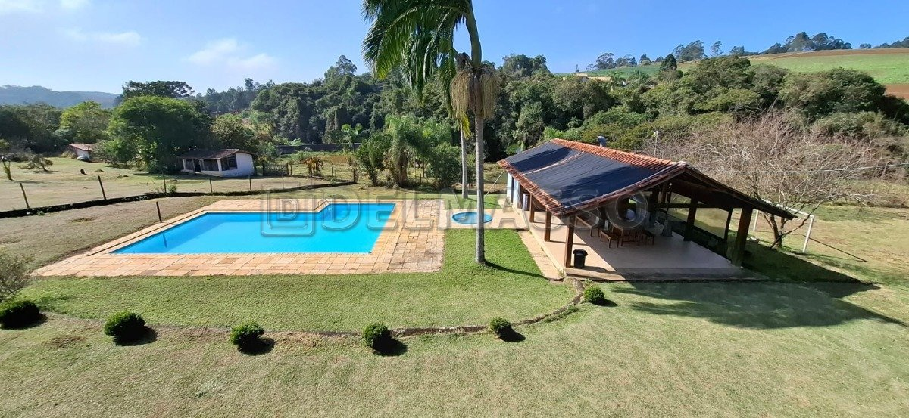
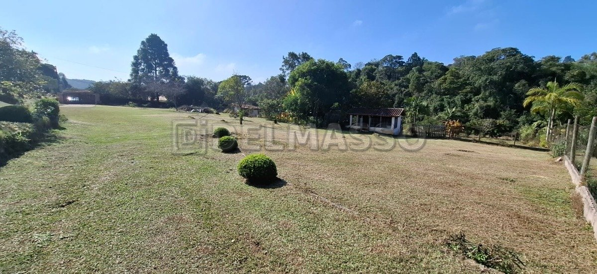
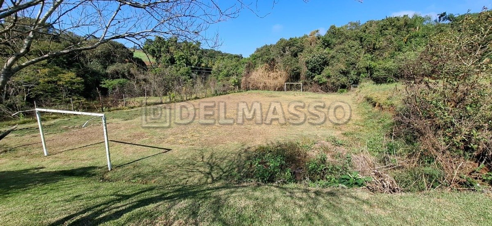
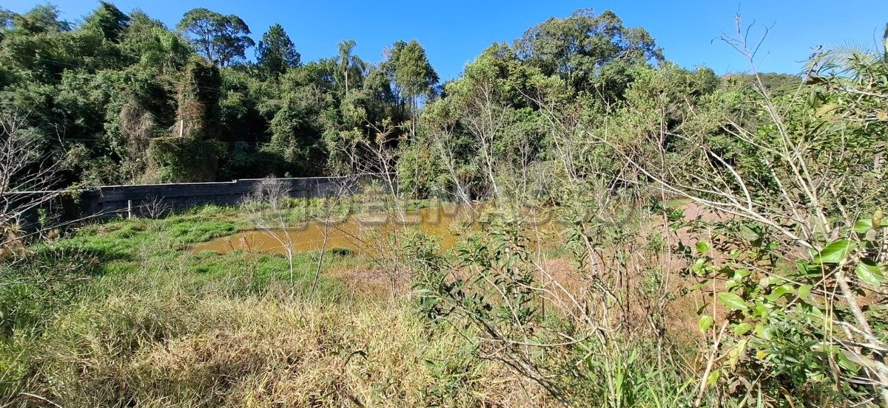
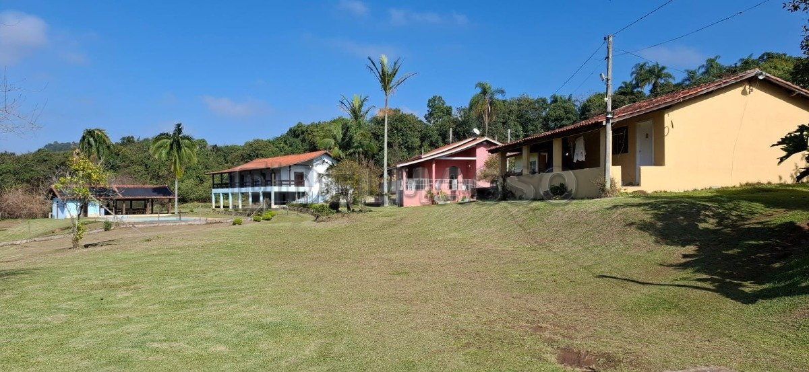
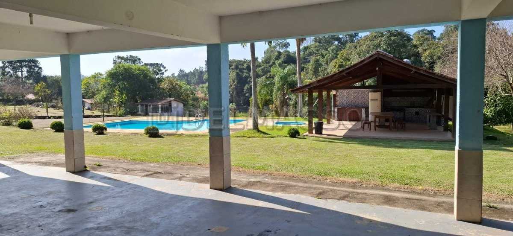
Fonte · Anúncio Delmasso Imóveis (ref. 8285) · delmassoimoveis.com.br/imovel/8285
55 fotos + vídeo de drone (GA Fotografia) em docs/terrenos/8285-chacara-ibiuna/ · leitura completa no README da pasta · Coletado em 12/07/2026
Vamos conversar
Se este projeto ressoa com você, o próximo passo é uma conversa. Sem compromisso — apenas para se conhecer e imaginar o que é possível.
Fale conosco contato@projetoraizes.com.br